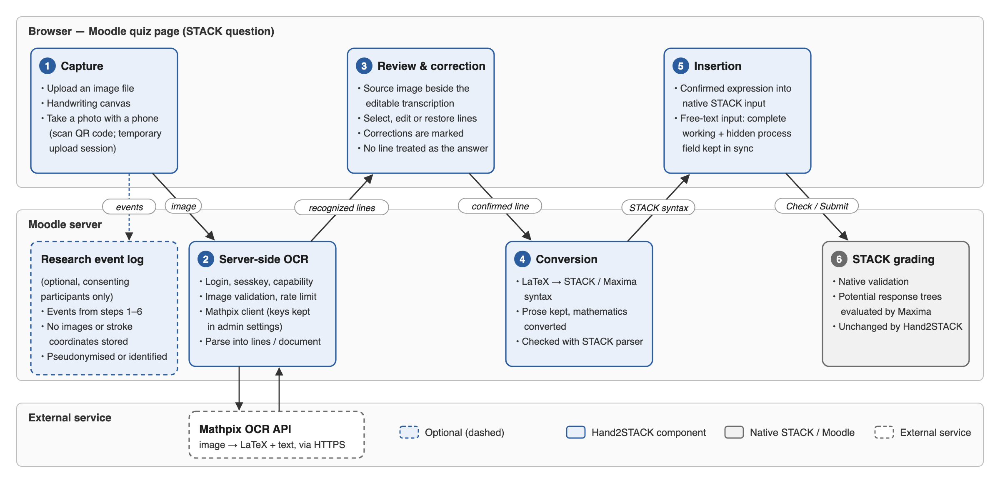
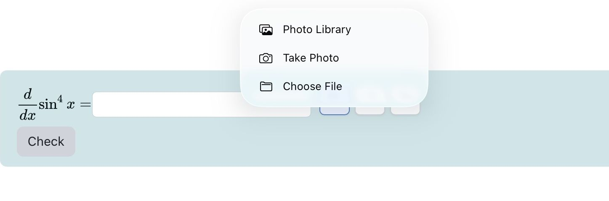
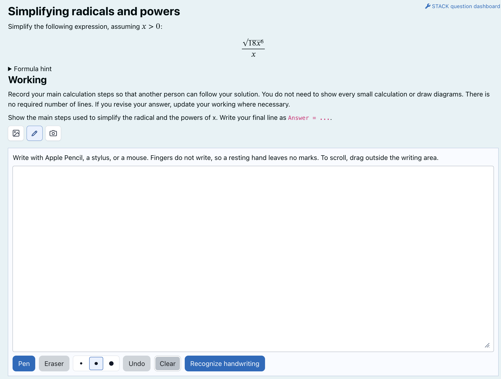
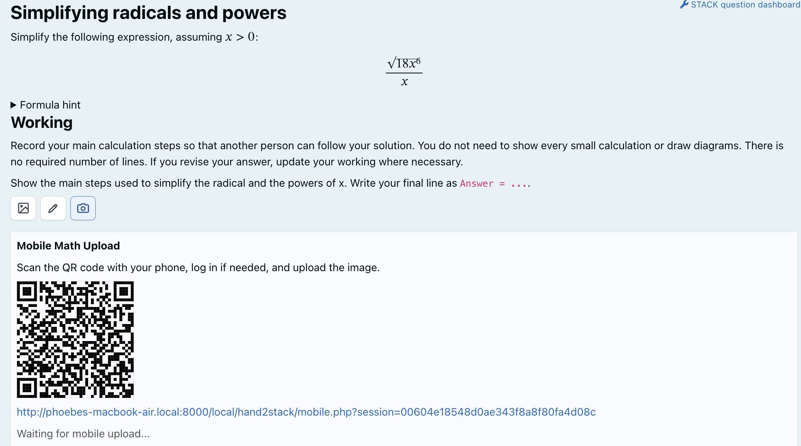
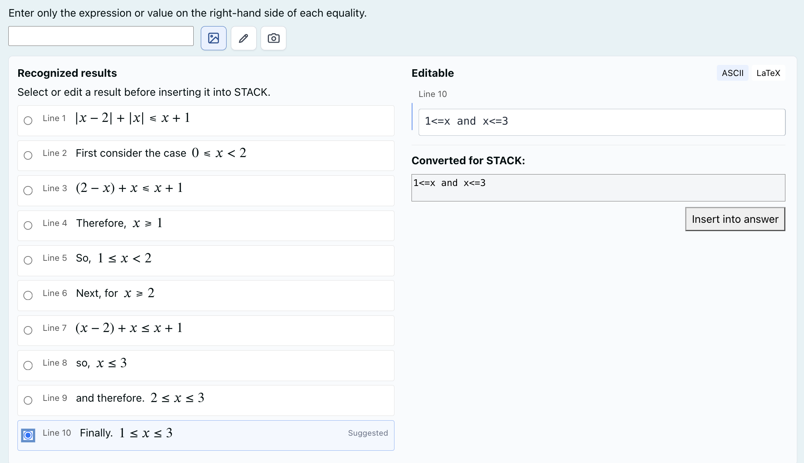
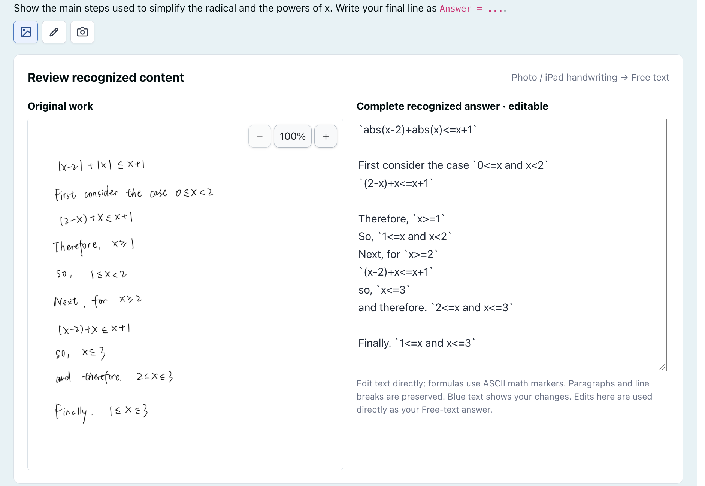

Hand2STACK: A Multimodal Handwritten Mathematics Input Plugin for Moodle/STACK
Jiajun Huang Graduate School of Informatics, Nagoya University, Japan huang.jiajun.h9@s.mail.nagoya-u.ac.jp
Takahiro Nakahara Sangensha LLC. nakahara@3strings.co.jp
Yasuyuki Nakamura Institute of Liberal Arts and Sciences, Nagoya University, Japan nakamura.yasuyuki.f1@f.mail.nagoya-u.ac.jp
Abstract
STACK supports sophisticated computer-algebra-based assessment, but entering mathematical expressions as text can be inconvenient, particularly when students have already worked out their solutions on paper or a tablet. Hand2STACK is a Moodle local plugin that connects handwritten mathematics to existing STACK answer fields. Students can write mathematics directly on a tablet or computer, take a photo with a phone or tablet, or upload an existing image from their device. When the quiz is open on a separate computer, an optional QR-code transfer lets students use their phone as a camera. After mathematical optical character recognition (OCR), students review and correct an editable ASCII representation; their confirmed algebraic answer is then converted to STACK/Maxima syntax for insertion. For STACK free-text inputs, the plugin can also preserve a complete, editable transcription of mathematical working rather than reducing it to a single answer. This case study describes the development of Hand2STACK, its student workflows, its integration with STACK's existing input and validation mechanisms, and current limitations and plans for pilot evaluation.
1. Motivation
STACK allows students to submit algebraic expressions that can be evaluated using a computer algebra system. This makes it possible to assess mathematical answers and provide targeted feedback [1, 2, 3]. However, the way students naturally write mathematics does not always match the syntax expected by an online answer box. For example, a fraction written on paper as may need to be entered as (x+1)/(x-2). Powers, multiplication, brackets, and functions can introduce similar differences between ordinary mathematical notation and the text used by STACK.
This is not necessarily a problem for students who are familiar with STACK syntax and using a full keyboard. Yet it can interrupt the flow of solving a problem, especially on tablets and smartphones or when a solution has already been written by hand. A student may know what they want to submit but still need to translate it into a different representation. Mathematical input therefore becomes a separate task from mathematical reasoning. Earlier work on mathematical input has explored alternatives such as flick-based interfaces [4] and MathTOUCH [5].
There is a related issue when we want students to show their working. In many mathematical tasks, the intermediate steps matter, not only the final expression. If students write a solution on paper and subsequently enter just one answer into STACK, their original working is not available within the digital assessment environment. STACK's free-text input provides a way to record mathematical working [6], but transferring an existing handwritten solution into that field can still require considerable retyping.
Hand2STACK was developed to address these practical gaps. Its purpose is not to solve mathematical problems for students. Rather, it aims to help students transfer mathematics they have written themselves into STACK, while allowing them to verify what the system has recognized. It also explores how a complete handwritten solution can be retained in a form that is accessible to STACK's existing tools.
2. Development of Hand2STACK
2.1 From camera-based input to multimodal support
Hand2STACK was developed from the beginning as a Moodle local plugin for entering handwritten mathematics into existing STACK questions. The version presented at MobileHCI 2026 [7] focused primarily on camera-based input: students could capture handwritten expressions, review the recognition results, and insert a confirmed STACK-compatible expression into an answer field. The plugin was already integrated into the Moodle/STACK assessment workflow at that stage.[9]
Since then, we have continued the development, extending its input capabilities and improving the review interface. The current version supports a broader range of handwriting and image-based interactions while retaining a common recognition, review, correction, and confirmation process. Another significant addition is the ability to preserve complete multi-line mathematical working in STACK free-text inputs, rather than handling only a selected algebraic answer. Section 3 describes how students use these features in practice.
2.2 Recognition and conversion
Hand2STACK uses Mathpix [8] to recognize handwritten mathematical content. The Moodle server sends an image to the recognition service and receives structured recognition results, including mathematical notation. For algebraic inputs, Hand2STACK first presents selected recognized mathematics in an editable ASCII-style form that is easier for students to correct, alongside a synchronized mathematical preview. When a student confirms the expression, the converter prepares STACK/Maxima-compatible input. This separates the review representation from the syntax ultimately inserted into STACK.
Recognition is only one stage of the process. An image may contain several equations, explanatory words, intermediate transformations, and a final result. There is no general reason to assume that the last recognized line is always the response the student intends to submit. The plugin therefore preserves the available recognized lines and presents them for review rather than silently choosing an answer on the student's behalf.
The conversion process also has limits. Handwriting, image quality, unusual notation, and deeply nested expressions can lead to recognition or conversion errors. Keeping recognition and answer confirmation separate is consequently an important part of the design.
2.3 Human-in-the-loop confirmation
The central interaction principle is recognize → review editable ASCII → correct → confirm → insert STACK/Maxima input. Students can compare the result with their original handwriting, select the intended expression, and change the recognized text when necessary. For an algebraic answer, the plugin can validate an edited expression using STACK's parser before inserting it into the answer box.
Importantly, Hand2STACK does not automatically submit a quiz attempt and does not decide whether a mathematical answer is correct. The student's confirmed expression is passed to the existing STACK input; STACK remains responsible for the question's assessment and feedback.

3. Student Workflow
3.1 Multimodal Mathematical Input
Hand2STACK offers three ways for students to bring handwritten mathematics into a STACK question, depending on how they work and which device they use:
- Uploading an existing image: Students who already have a photograph, scan, or screenshot of their mathematics can select Upload and choose the saved image from their computer, tablet, or phone. They do not need to photograph the work again or reproduce it on the handwriting canvas.

- Direct handwriting: Students select Handwrite to open a writing canvas within the quiz page. They can write equations using an Apple Pencil, a finger on a touchscreen, or a mouse, and use the eraser, undo, or clear controls before sending their handwriting for recognition. This option is particularly suitable for students already working on a tablet or touchscreen.

- Taking a photograph: Students who solve problems on paper can capture their handwritten work using a phone or tablet camera. When they open the quiz on that mobile device, they can take a photo through the image-upload interface. If they are taking the quiz on a laptop or desktop, where photographing a notebook is less convenient, the Mobile option provides a QR code: scanning it opens a temporary upload page on the phone, and the captured work is returned to the original STACK question.

These three options share the same recognition and review process. Once the handwritten content has been captured, Hand2STACK presents it for checking and correction; the subsequent interaction depends on whether the STACK question uses an algebraic or free-text input, as described below.
3.2 Inserting an algebraic answer
This section describes how Hand2STACK extends STACK's Algebraic input by allowing students to insert a selected algebraic expression from their handwritten work. This differs from the Free-text input workflow, which preserves complete multi-line mathematical working rather than a single selected expression.
Consider a student solving Their handwritten working might contain:
x^2 + 2x + 1 = 0
(x + 1)^2 = 0
x + 1 = 0
x = -1
An algebraic STACK input may require only the value -1, rather than the full working or the equation x=-1. Hand2STACK displays recognized lines as candidates. The student can choose a line, select the relevant part of an expression, or edit the recognized text, depending on what the question requests. The selected result is shown in an editable ASCII-style form so that the student can correct recognition errors and check the synchronized mathematical preview. After the student confirms it and clicks Insert Answer, Hand2STACK converts the expression to STACK/Maxima syntax and places it in the original algebraic answer field. The edited algebraic expression can be validated with STACK's parser before insertion; this checks the input syntax, not whether the student's mathematical answer is correct.
This matters because selecting the mathematically relevant answer depends on the question, not just on the OCR output. The student remains responsible for deciding which expression answers the question. After insertion, the ordinary STACK workflow—including the question's input validation, assessment, and feedback—continues as usual.

Algebraic-answer review">3.3 Preserving complete working in free-text inputs
When a task asks students to show their working, selecting one mathematical line would lose the rest of the solution. Hand2STACK instead presents a two-column review: the handwritten source image on the left and an editable ASCII/AsciiMath transcription on the right. The transcription keeps the full sequence of mathematical steps together with surrounding explanatory text. Students can zoom or drag the source image while checking the recognition result, and edits or newly added content are highlighted in blue.
The edited transcription is synchronized with STACK's underlying free-text input. This allows students to include the complete working as editable text rather than uploading a picture alone. When the question includes it, the plugin can also fill an optional hidden process field with the mathematical expressions identified in the working, in order, while excluding prose and generated summaries. It offers a math-only sequence alongside the full free-text response.
Hand2STACK focuses on input, not grading. It preserves the student's reviewed working without automatically selecting a final answer or changing the question's marking rules.

Algebraic-answer review">4. Integration with Moodle and STACK
Hand2STACK is implemented as a Moodle local plugin, rather than a replacement for the STACK question type. It adds an input interface around existing supported STACK answer fields. Consequently, teachers can continue to use STACK's own question variables, input definitions, potential response trees, and feedback mechanisms. The additional input route is intended to complement keyboard entry, not to replace it.
The current pilot release is v0.6.1-alpha. It requires Moodle 4.4 or later, an installed and configured STACK question type, and Mathpix credentials. The free-text workflow described here depends on STACK's newer free-text functionality (STACK 4.13 or later). Site administrators can install the prepared release package, enable the plugin in Moodle settings, and test the interaction in a STACK question preview or quiz. The Mathpix credentials are held on the Moodle server, and normal deployment does not require running a separate Node.js recognition server. Installation and configuration instructions are available in the project repository [9].
In practice, teachers can keep their existing STACK questions and marking rules. Hand2STACK only adds optional ways to enter mathematical content. The plugin does not change how STACK validates or grades the student's response.
Hand2STACK also includes optional research event logging, disabled by default. In an appropriately configured study, and only for participants given the relevant permission, the system can record events such as recognition, selection, correction, validation, insertion, submission, and feedback. It can also summarize some handwriting interactions without storing stroke coordinates in the research log. The logs can show, for example, when students correct an OCR result, validate an expression, or revise an answer after receiving STACK feedback. Such sequences will help us identify where the input workflow causes difficulties during the pilot.
The plugin has undergone implementation and regression testing and is being prepared for controlled pilot use. At this stage, we do not claim measured improvements in answer accuracy, completion time, or learning outcomes. Those questions require evaluation with students.
5. Current Limitations
Recognition and conversion may introduce errors. Free-text working may contain nested fractions, matrices, annotations, or lines that Mathpix merges or separates incorrectly. Hand2STACK converts recognized LaTeX into editable ASCII/AsciiMath where possible, but retains the LaTeX when conversion is unsuccessful. Students may still need to correct recognition errors or incorrectly separated lines.
Rule-based conversion cannot cover every notation. Recognized LaTeX still needs to be translated into STACK/Maxima syntax. Unusual combinations of functions, nested expressions, or ambiguous notation may not yet be handled by the current conversion rules. Improving coverage also requires regression tests so that a new rule does not break previously supported input.
Evaluation is still limited. Most of the evidence so far comes from development and regression testing. A pilot with real students is needed to find less obvious interface problems and understand which limitations matter most during actual mathematical tasks.
6. Planned Improvements and Pilot Evaluation
Our immediate next step is a controlled pilot study with students using conventional keyboard entry and Hand2STACK on selected STACK tasks. Beyond comparing input time, corrections, and subjective experience, the study should reveal problems that developer testing may have missed. We will ask participants which controls are confusing, what slows down their work, and which improvements they would find useful.
The pilot findings will guide further development. Possible improvements include easier correction and selection in long or complex mathematical expressions, broader and more reliable LaTeX-to-STACK conversion, clearer messages when recognition fails, and more consistent layouts and interactions across desktop computers, iPads, and smartphones. Another area to explore is making the plugin easier for STACK question authors to configure for different answer types while continuing to rely on STACK's native grading mechanisms.
These are planned improvements rather than features already delivered. We intend to refine Hand2STACK using user feedback and practical deployment experience, and we welcome suggestions from the STACK community about mathematical notation, question formats, and classroom situations that the plugin should support.
Availability
Hand2STACK is available as an open-source Moodle local plugin:
- Source code and documentation: https://github.com/Phoebe-hhh/hand2stack
- Pilot release (v0.6.1-alpha): https://github.com/Phoebe-hhh/hand2stack/releases/tag/v0.6.1-alpha
The plugin is intended for controlled pilot use at present. Administrators should consult the release notes and verify compatibility, external OCR service requirements, and institutional privacy policies before deployment.
References
- Sangwin, C. (2015). Computer Aided Assessment of Mathematics Using STACK. In S. J. Cho (Ed.), Selected Regular Lectures from the 12th International Congress on Mathematical Education (pp. 695–713). Springer, Cham. https://doi.org/10.1007/978-3-319-17187-6_39
- STACK Project. (2026). STACK Documentation. Retrieved June 9, 2026, from https://docs.stack-assessment.org/en/
- Moodle. (2018). STACK question type. MoodleDocs. Retrieved June 9, 2026, from https://docs.moodle.org/en/STACK_question_type
- Nakamura, Y., and Nakahara, T. (2017). A New Mathematics Input Interface with Flick Operation for Mobile Devices. MSOR Connections, 15(2), 76–82. https://doi.org/10.21100/msor.v15i2.413
- Shirai, S., and Fukui, T. (2017). MathTOUCH: Mathematical Input Interface for E-Assessment Systems. MSOR Connections, 15(2), 70–75. https://doi.org/10.21100/msor.v15i2.415
- STACK Project. Free text input documentation. https://docs.stack-assessment.org/en/Specialist_tools/Free_text_input/
- Huang, J., Nakahara, T., and Nakamura, Y. (2026). From Handwritten Expressions to STACK Answers: A Mobile Camera-Based Input Helper for Moodle/STACK. Proceedings of the 28th International Conference on Mobile Human-Computer Interaction (MobileHCI '26). https://doi.org/10.1145/3821581.3833134
- Mathpix. (2026). Mathpix OCR API Documentation. Retrieved June 9, 2026, from https://docs.mathpix.com/
- Hand2STACK. Source code, releases, and installation guide. GitHub. https://github.com/Phoebe-hhh/hand2stack